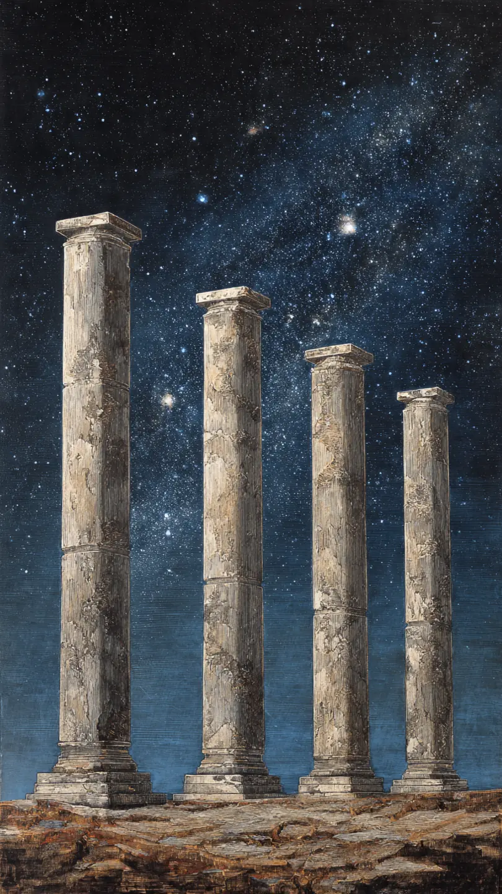
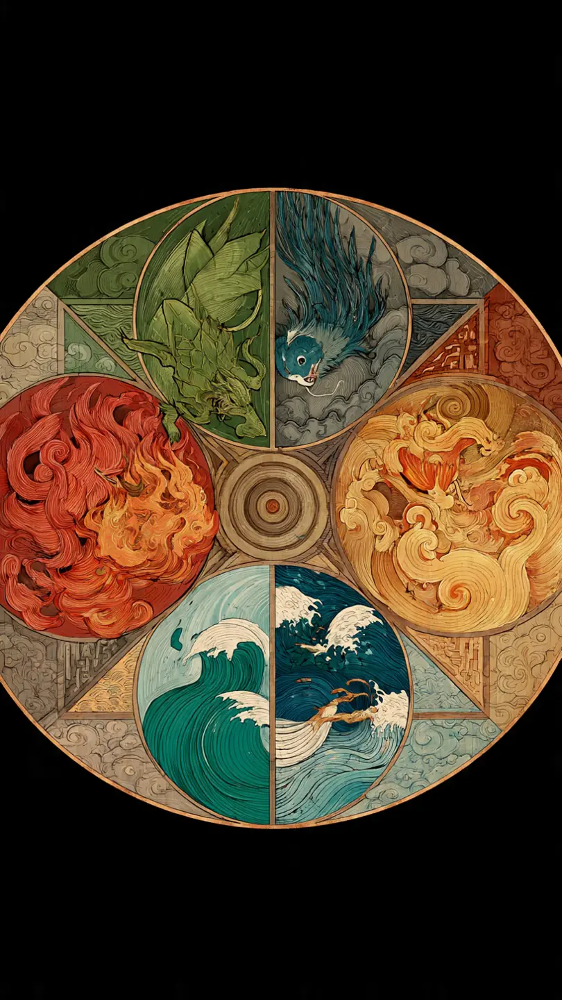
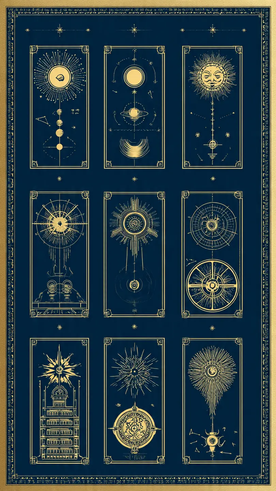
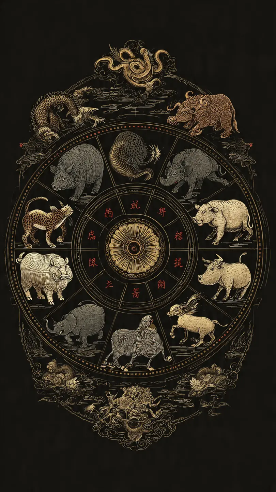
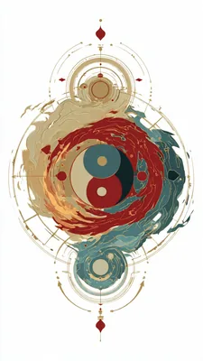
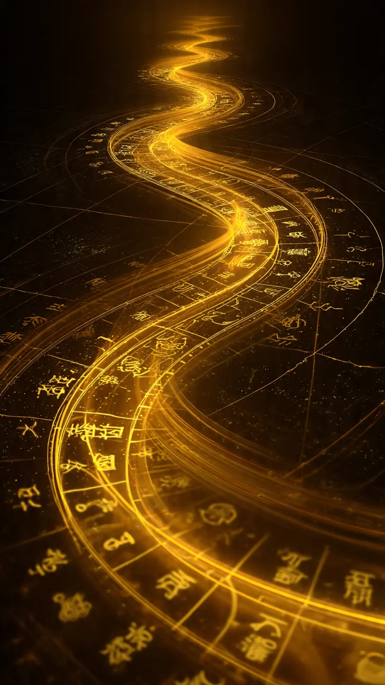
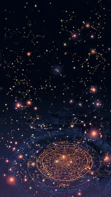
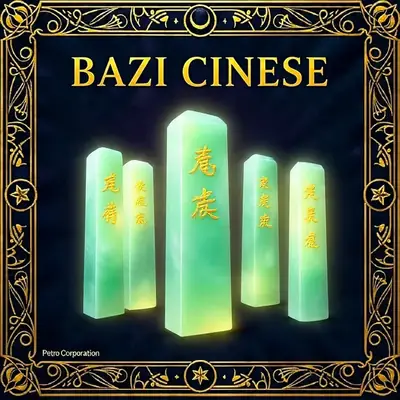

Testi classici del sistema BaZi — Dinastia Tang, 618–907 d.C.
Il BaZi (八字, pronunciato "ba-dzì") significa letteralmente Otto Caratteri e rappresenta uno dei sistemi divinatori più antichi e raffinati della civiltà cinese. Le sue radici affondano nella filosofia taoista e nel sistema cosmologico degli I Ching, ma come disciplina autonoma si è strutturato durante la Dinastia Tang (618–907 d.C.).
Il grande maestro Li Xu Zhong fu il primo a codificare il sistema basato sui Tronchi Celesti e sui Rami Terrestri. Fu poi Xu Zi Ping, durante la Dinastia Song (960–1279), a rivoluzionare il metodo introducendo il Pilastro del Giorno come centro dell'analisi — motivo per cui il BaZi è spesso chiamato anche Zi Ping Bazi o Metodo Zi Ping.
⚡ Il BaZi non è fatalismo: secondo la tradizione cinese il destino si divide in tre livelli — Tian Yun (destino celeste, 33%), Di Yun (destino terrestre/feng shui, 33%) e Ren Yun (sforzo umano, 33%). Il BaZi rivela il livello celeste, ma l'azione personale resta sempre determinante.
Nel corso dei secoli la disciplina si è tramandata attraverso testi classici come il San Ming Tong Hui, il Yuan Hai Zi Ping e il Di Tian Sui. Oggi è praticata in Cina, Taiwan, Hong Kong, Singapore e in tutta la diaspora cinese, con crescente attenzione internazionale anche in Europa.
I Quattro Pilastri del Destino

Il tema natale BaZi è strutturato in quattro pilastri, uno per ciascuna unità temporale della nascita: Anno, Mese, Giorno e Ora. Ogni pilastro contiene due caratteri — un Tronco Celeste (superiore) e un Ramo Terrestre (inferiore) — per un totale di otto caratteri.
Anno
Tronco甲Jiǎ · Legno+
Ramo子Zǐ · Ratto
Mese
Tronco丙Bǐng · Fuoco+
Ramo寅Yín · Tigre
Giorno ★
Day Master戊Wù · Terra+
Ramo午Wǔ · Cavallo
Ora
Tronco庚Gēng · Met+
Ramo申Shēn · Scimmia
Il Pilastro dell'Anno (年柱) riflette il destino ancestrale e l'ambiente della prima infanzia. Il Pilastro del Mese (月柱) rappresenta i genitori, la carriera e le circostanze dei giovani adulti. Il Pilastro del Giorno (日柱) è il più importante: il suo Tronco Celeste è il Giorno Maestro, l'identità essenziale della persona, mentre il Ramo inferiore indica il partner. Il Pilastro dell'Ora (时柱) parla dei figli, della tarda età e degli obiettivi più profondi.
I Cinque Elementi — Wu Xing (五行)

Al cuore del BaZi c'è il sistema dei Cinque Elementi (五行, Wǔ Xíng): Legno, Fuoco, Terra, Metallo e Acqua. Non sono elementi fisici ma qualità energetiche in continua trasformazione. La loro proporzione nel tema natale determina l'equilibrio della vita della persona.
木LegnoMù
火FuocoHuǒ
土TerraTǔ
金MetalloJīn
水AcquaShuǐ
Corrispondenze degli Elementi
Elemento
Stagione
Organo
Qualità
Legno
Primavera
Fegato
Crescita, creatività
Fuoco
Estate
Cuore
Calore, entusiasmo
Terra
Intersolstizi
Milza
Stabilità, mediazione
Metallo
Autunno
Polmoni
Precisione, giustizia
Acqua
Inverno
Reni
Saggezza, profondità
I Dieci Tronchi Celesti (天干)

I Dieci Tronchi Celesti (天干, Tiāngān) sono la polarità Yang (+) o Yin (−) dei Cinque Elementi. Appaiono nella riga superiore di ogni pilastro e rappresentano energia manifesta e visibile.
N.
Hanzi
Pinyin
Elemento
Polarità
Qualità
1
甲
Jiǎ
Legno
Yang+
Ambizioso, visionario
2
乙
Yǐ
Legno
Yin−
Flessibile, tenace
3
丙
Bǐng
Fuoco
Yang+
Carismatico, ottimista
4
丁
Dīng
Fuoco
Yin−
Intuitivo, perspicace
5
戊
Wù
Terra
Yang+
Stabile, protettivo
6
己
Jǐ
Terra
Yin−
Premuroso, riflessivo
7
庚
Gēng
Metallo
Yang+
Diretto, coraggioso
8
辛
Xīn
Metallo
Yin−
Elegante, perfezionista
9
壬
Rén
Acqua
Yang+
Intellettuale, strategico
10
癸
Guǐ
Acqua
Yin−
Empatico, spirituale
I Dodici Rami Terrestri (地支)

I Dodici Rami Terrestri (地支, Dìzhī) formano il ciclo zodiacale cinese. Appaiono nella riga inferiore di ogni pilastro. Ciascun ramo contiene elementi nascosti interni (藏干, Hidden Stems), rendendolo molto più ricco dello zodiaco popolare.
Hanzi
Animale
Elemento
Ore
子
🐭 Ratto
Acqua Yang
23–01
丑
🐮 Bue
Terra Yin
01–03
寅
🐯 Tigre
Legno Yang
03–05
卯
🐰 Coniglio
Legno Yin
05–07
辰
🐲 Drago
Terra Yang
07–09
巳
🐍 Serpente
Fuoco Yin
09–11
午
🐴 Cavallo
Fuoco Yang
11–13
未
🐑 Capra
Terra Yin
13–15
申
🐵 Scimmia
Metallo Yang
15–17
酉
🐓 Gallo
Metallo Yin
17–19
戌
🐶 Cane
Terra Yang
19–21
亥
🐷 Maiale
Acqua Yin
21–23
Il Giorno Maestro — Day Master (日主)
Il Giorno Maestro (日主, Rì Zhǔ) è il Tronco Celeste del Pilastro del Giorno: il punto focale di tutta l'analisi BaZi. Rappresenta l'essenza, l'identità e il modo in cui la persona percepisce il mondo. Il primo passo è determinare se il Day Master è forte o debole (旺 o 弱): questa distinzione cambia radicalmente l'interpretazione di tutti gli altri elementi.
甲
Jiǎ · Legno Yang
Grande albero. Ambizioso, diretto, vuole crescere. Leader naturale, spesso inflessibile.
乙
Yǐ · Legno Yin
Vite flessibile. Diplomatico, aggira gli ostacoli. Creativo ed elegante.
丙
Bǐng · Fuoco Yang
Sole. Carismatico, generoso. Ottimista ma impulsivo. Illumina chi lo circonda.
丁
Dīng · Fuoco Yin
Fiamma di candela. Intuitivo, emotivo, creativo. Illumina dall'interno.
戊
Wù · Terra Yang
Montagna. Stabile, affidabile, resistente. Costruisce con solidità nel tempo.
己
Jǐ · Terra Yin
Terra fertile. Premuroso, empatico. Trasforma le esperienze in saggezza pratica.
庚
Gēng · Metallo Yang
Spada d'acciaio. Diretto, coraggioso, decisioni nette. Forte senso della giustizia.
辛
Xīn · Metallo Yin
Gioiello. Elegante, raffinato, perfezionista. Sensibile, capace di grande eccellenza.
壬
Rén · Acqua Yang
Oceano. Intellettuale, strategico, visionario. Ha bisogno di struttura per non disperdersi.
癸
Guǐ · Acqua Yin
Pioggia. Intuitivo, spirituale. Profonda vita interiore, spesso psichicamente sensibile.
Cicli di Generazione e Controllo

I Cinque Elementi interagiscono continuamente attraverso due cicli fondamentali che determinano le dinamiche di ogni tema BaZi.
🌱 Ciclo di Generazione (相生)
Un elemento nutre il successivo.
Legno→Fuoco→Terra→Metallo→Acqua→Legno
⚔️ Ciclo di Controllo (相克)
Un elemento indebolisce un altro.
Legno→Terra→Acqua→Fuoco→Metallo→Legno
🔑 Nel BaZi avanzato si studiano anche il Ciclo di Riduzione (泄) e il Ciclo di Contro-controllo (侮), che entrano in gioco quando un elemento controllato è troppo forte. Queste dinamiche rendono ogni tema natale unico e irripetibile.
I Dieci Dei — Relazioni tra Day Master e altri elementi
Nel BaZi avanzato tutti i caratteri vengono classificati come Dieci Dei (十神, Shí Shén) in relazione al Giorno Maestro: Ufficiale Diretto (carriera, autorità), Sette Uccisioni (competizione, trasformazione), Stella della Risorsa (apprendimento, protezione), Ricchezza Diretta (lavoro concreto), Food God (creatività, talenti), Hurting Officer (intelletto ribelle, scontri con l'autorità), e altri. La loro presenza e qualità nel tema rivela il modo in cui la persona affronta lavoro, relazioni, risorse e sfide nel corso della vita.
I Cicli di Grande Fortuna (大運)

Il destino BaZi si articola nel tempo attraverso i Cicli di Grande Fortuna (大運, Dà Yùn): periodi di circa 10 anni che si attivano in sequenza. Ogni ciclo porta nuovi Tronco e Ramo che interagiscono con il tema natale, aprendo finestre di opportunità o portando sfide specifiche. Il punto di partenza si calcola in base alla prossimità del neonato al Jie Qi successivo o precedente — in media il primo ciclo inizia tra i 2 e i 9 anni.
Esempio schematico di cicli (scorri →):
3–12 anni癸Guǐ卯Mǎo
13–22 anni壬Rén寅Yín
23–32 anni辛Xīn丑Chǒu
33–42 anni庚Gēng子Zǐ
43–52 anni己Jǐ亥Hài
53–62 anni戊Wù戌Xū
63–72 anni丁Dīng酉Yǒu
73–82 anni丙Bǐng申Shēn
Oltre ai cicli decennali, il BaZi considera gli Anni di Fortuna (流年, Liú Nián): ogni anno porta il proprio carattere che interagisce con tema natale e ciclo decennale attivo. La sovrapposizione di questi tre livelli produce la previsione BaZi completa.
Stelle Speciali e Combinazioni

Il BaZi avanzato include un ricco sistema di stelle speciali (神殺, Shén Shā) — configurazioni calcolate dalla posizione degli elementi — e combinazioni tra Tronchi e Rami che modificano gli equilibri energetici.
天乙
Cavallo di Nobiltà (天乙貴人)
Porta assistenza da figure influenti. Chi la possiede è aiutato da mentori nei momenti critici.
文昌
Stella dell'Accademia (文昌)
Favorisce intelligenza, talento accademico, scrittura e reputazione pubblica.
驛馬
Cavallo in Viaggio (驛馬)
Indica movimento, cambiamenti, carriere internazionali o nomadi.
桃花
Fiore di Pesco (桃花)
Magnetismo, carisma, attrattiva romantica. Può indicare popolarità o scandali se mal aspectata.
將星
Stella del Generale (將星)
Leadership, autorità, capacità di guidare. Presente in chi occupa posizioni di comando.
孤辰
Stella della Solitudine (孤辰)
Tendenza all'isolamento o autosufficienza. Spesso associata a percorsi spirituali solitari.
Le Triplici Combinazioni (三合) formano triangoli elementali: Tigre-Cavallo-Cane (Fuoco), Serpente-Gallo-Bue (Metallo), Scimmia-Ratto-Drago (Acqua), Maiale-Coniglio-Capra (Legno). Quando i tre rami appaiono insieme nel tema, quell'elemento viene enormemente potenziato. Le Penalità (相刑) tra certi rami creano invece tensioni e sfide specifiche.
Come Leggere un Tema BaZi
La lettura richiede studio approfondito e segue passi sequenziali ben definiti:
Costruire il tema: convertire data, ora e luogo di nascita in otto caratteri con le tavole Tongshu o software dedicati.
Identificare il Giorno Maestro e il suo elemento/polarità (Yang/Yin).
Valutare la forza del Day Master analizzando stagione di nascita, elementi alleati e avversari.
Classificare gli altri sette caratteri come Dieci Dei rispetto al Giorno Maestro.
Identificare gli elementi favorevoli (喜用神, Xi Yong Shen) per bilanciare il tema.
Analizzare Stelle Speciali e Combinazioni per individuare talenti e aree critiche.
Sovrapporre i Cicli di Grande Fortuna per vedere l'evoluzione del destino decennio per decennio.
Applicare gli Anni di Fortuna annuali per la previsione a breve termine.
📚 Testi classici per lo studio avanzato: Di Tian Sui (滴天髓), Qiong Tong Bao Jian (穷通宝鉴) e San Ming Tong Hui (三命通会). Per altri sistemi cinesi visita anche Zi Wei Dou Shu e I Ching su MYSTICA.
BaZi e la Visione Cinese del Destino: Storia, Filosofia e Pratica

Da Li Xu Zhong a Xu Zi Ping: duemila anni di raffinamento
Il BaZi nasce in un contesto culturale dove il tempo non è lineare ma ciclico: gli anni si alternano in sessantennali che combinano i Dieci Tronchi Celesti con i Dodici Rami Terrestri, generando sequenze che si ripetono ogni sessant'anni. Questa visione ciclica della realtà — condivisa con il calendario lunare cinese, il Feng Shui e la medicina tradizionale — ha permesso di sviluppare nel corso dei secoli un sistema di cartografia del destino di straordinaria complessità e coerenza interna, capace di resistere a oltre mille anni di trasformazioni culturali e politiche.
La Dinastia Tang (618–907 d.C.) fu il crogiolo in cui il BaZi prese forma compiuta. Il maestro Li Xu Zhong sistematizzò per primo le relazioni tra Tronchi Celesti e Rami Terrestri applicate alla data di nascita. Ma fu Xu Zi Ping, durante la Dinastia Song (960–1279), a operare la svolta decisiva: spostò il centro dell'analisi dal Pilastro dell'Anno al Pilastro del Giorno, introducendo il concetto di Day Master. Da quel momento il BaZi divenne un sistema centrato sull'individuo, aprendo la via all'analisi psicologica che lo contraddistingue ancora oggi.
I testi classici che codificarono questo sapere — il Di Tian Sui (滴天髓), il Qiong Tong Bao Jian (穷通宝鉴) e il San Ming Tong Hui (三命通会) — rimangono le fonti primarie per i praticanti seri. Non si limitano a descrivere i caratteri: analizzano le interazioni dinamiche tra gli elementi stagione per stagione, mostrando come lo stesso Day Master abbia bisogni completamente diversi a seconda del mese di nascita. Un Fuoco Yang nato d'estate ha troppo calore e ha bisogno di Acqua; lo stesso Fuoco Yang nato in inverno ha invece bisogno di Legno che lo alimenti.
Il BaZi oggi: tra tradizione e rinascita globale
Nel Novecento il BaZi ha conosciuto una seconda giovinezza grazie alla diaspora cinese in Hong Kong, Singapore e Taiwan, e poi alla globalizzazione digitale. Maestri come Joey Yap, Raymond Lo e Lillian Too hanno tradotto e adattato i classici in inglese, portando il sistema all'attenzione mondiale. Oggi si contano centinaia di scuole internazionali, software di calcolo automatico e comunità online che studiano e praticano il BaZi nel rispetto delle radici tradizionali cinesi.
Ciò che rende il BaZi irriducibile a una semplice app di oroscopo è la sua natura relazionale: non esistono caratteri buoni o cattivi in assoluto, ma solo equilibri e squilibri. Un tema con molto Fuoco può indicare intelligenza brillante e carisma oppure instabilità emotiva — a seconda del contesto generale e del Day Master. È questa complessità sfumata, questa attenzione alle interazioni piuttosto che ai singoli simboli, che ha permesso al BaZi di sopravvivere e fiorire per oltre mille anni come strumento di comprensione dell'esistenza umana.
Il BaZi (八字) è un sistema astrologico cinese che analizza data e ora di nascita per costruire un tema composto da quattro pilastri: Anno, Mese, Giorno e Ora. Ogni pilastro contiene due caratteri — un Tronco Celeste e un Ramo Terrestre — per un totale di otto caratteri da cui deriva il nome. La costruzione del tema richiede la conversione della data gregoriana nel calendario cinese usando tabelle Tongshu o software dedicati. Il risultato è una mappa unica che riflette il potenziale energetico, le tendenze caratteriali e i cicli di vita della persona.
L'oroscopo cinese popolare usa solo l'anno di nascita — sistema generico e poco preciso. Il BaZi usa anno, mese, giorno e ora, analizzando le interazioni tra i Cinque Elementi per una mappa personalizzata. Lo Zi Wei Dou Shu è un altro sistema cinese sofisticato, basato su un diverso set di stelle e palazzi, generalmente orientato alla previsione dettagliata degli eventi. I praticanti esperti spesso usano entrambi in modo complementare. Puoi approfondire lo Zi Wei Dou Shu nella sezione dedicata di MYSTICA.
Il Day Master è il Tronco Celeste del Pilastro del Giorno e rappresenta l'essenza della persona. La sua forza si valuta analizzando quanto supporto riceve dagli altri elementi del tema: viene considerato forte se il mese di nascita corrisponde alla stagione del suo elemento e ha molti caratteri alleati. La distinzione è fondamentale: gli elementi favorevoli per un Day Master forte sono completamente diversi da quelli per un Day Master debole, il che ribalta l'interpretazione di molti simboli.
Per calcolare il Giorno Maestro è necessario convertire la data di nascita gregoriana in caratteri cinesi usando le tavole del calendario cinese (Tongshu). Il Giorno Maestro è il Tronco Celeste (il carattere superiore) del Pilastro del Giorno. Esistono app e software online dedicati che eseguono questo calcolo automaticamente dalla data e dall'ora di nascita. Tra i dieci possibili Day Master — uno per ciascuno dei Dieci Tronchi Celesti — il tuo elemento e la sua polarità (Yang o Yin) definiscono la base di tutta l'interpretazione BaZi.
Il BaZi opera su due livelli. Il primo è strutturale: il tema natale rivela la personalità, i punti di forza e debolezza, e le sfere della vita dove si concentreranno le energie. Il secondo è previsionale: sovrapporre i Cicli di Grande Fortuna decennali e gli Anni di Fortuna annuali al tema natale permette di identificare periodi favorevoli o critici con notevole specificità. I praticanti esperti possono individuare finestre temporali precise per decisioni importanti. Il BaZi indica però tendenze e probabilità, non certezze: le scelte individuali restano sempre determinanti.